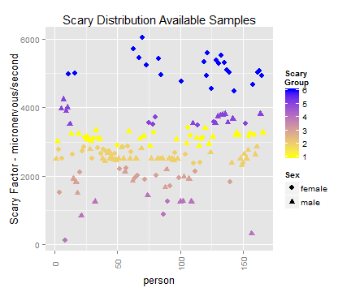
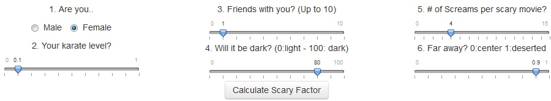
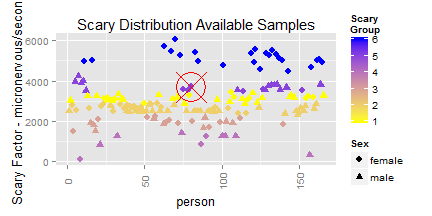
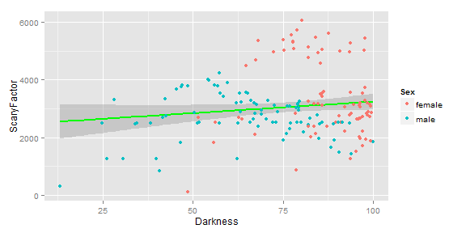

Why?
Have you been invited to a strange party or date?
Will you go holidays on a "wild" area?
Do you feel scary becouse of the location...?
Are you in doubt about if to go or not to go...
Find out. . . Your scary factor!
jaime laorden
Data Analytics Enthusiastic Novice

Analysis done with > 150 scary situations
Over 20 areas selected
Advanced data analitics methods
Kmeans Clustering and Regression applied
Hihgly acurate results


